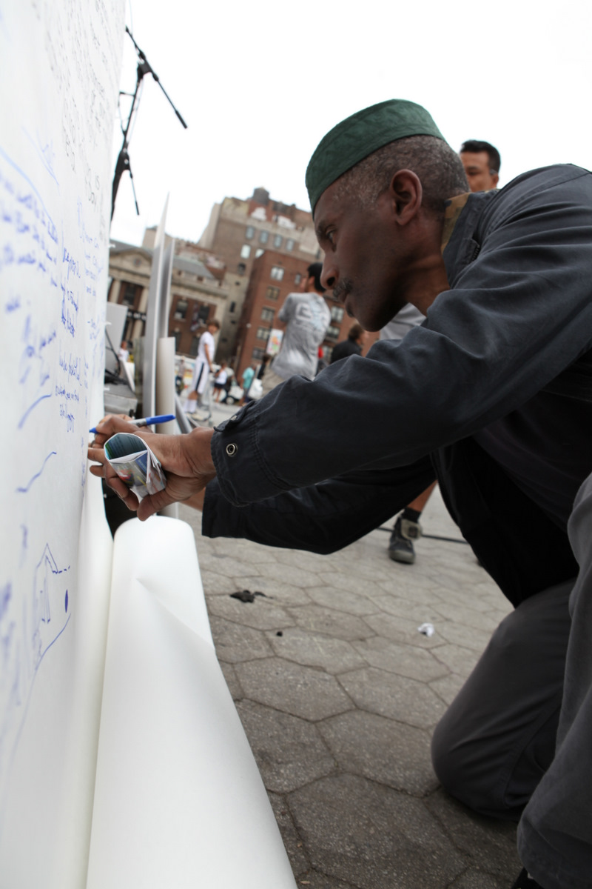
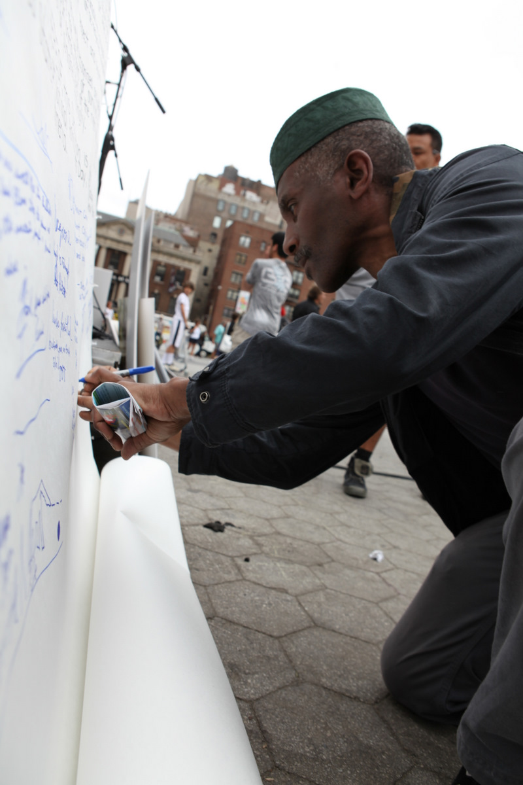

The National Animal Rights Day
Commemorate. Educate. Celebrate.


New York
 

The 1st National Animal Rights Day (NARD1) was held on Sunday June 5, 2011, in Union Square, New York City. The event started with a requiem ceremony for the billions of animals who die every year in the US by human hands, in various industries. Then, the Declaration of Animal Rights was unveiled for the first time, read publicly and signed by the attending crowd. The second part of the day celebrated the alternative to this sad reality, with the participation of the following organizations, speakers, performers and cruelty-free vendors:
Featuring
Our Planet. Theirs Too.
Mercy For Animals
People for the Ethical Treatment of Animals (PETA)
Woodstock Farm Animal Sanctuary
Catskills Animal Sanctuary
Caring Activists Against Fur (CAAF)
Friends of Animals United NJ (FAUN)
Animal ACTivists of Philly
Vegan Outreach
National Anti-Vivisection Society (Navs)
Coalition to Ban Horse-Drawn Carriages
Urban Animal Alliance
The Alliance to End Chickens as Kaporos
Darwin Animal Doctors
SOS: Save Our Shelter Animals
People for the End of Animal Cruelty & Exploitation~PEACE
In Defense of Animals
Heart For Animals
Animalia Qualia
League of Humane Voters
Tofurky
Primal Spirit Foods
Turtle Mountain
The Loving Hut
JivamukTea Cafe
The Ethical Man
olsenHaus
Vaute Couture
Sound Earth
Green Mountain Energy
Community Energy
K-Lethal
Running Still
SUPERCUTE!
Stereo Sinai
Tohm Lev
Broadway star Nellie McKay
State Senator Tony Avella
State Assemblymember Linda Rosenthal
Manhattan Borough President Scott Stringer